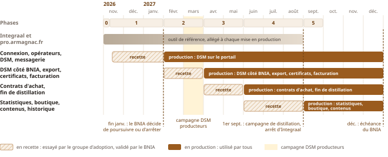

Le BNIA est propriétaire de sa plateforme à 100 % : son code, son hébergement, ses données.
Le prestataire
J’ai occupé les trois places
L’interprofession demande les données, l’opérateur les déclare, le prestataire construit l’outil.
Interprofession
Coordinateur de l’ODG Kintoa
Filière du Porc Basque · 2008 – 2014
80 producteurs et 5 artisans
Obtention de l’AOP Kintoa
Suivi des indicateurs de la filière
Opérateur
Directeur de la coopérative Belaun
Les Aldudes · 2014 – 2019
Chiffre d’affaires doublé, de 400 à 800 k€
Obligations déclaratives et administratives
Prestataire
Chef de projet informatique
Groupe Seldon pour la Banque de France · 2022 – 2026
Portail usagers et back-office : 6 000 utilisateurs
Reprise des données : 25 ans d’historique
Un interlocuteur unique, du recueil du besoin à la maintenance.
Confiance
Une plateforme qui appartient au BNIA à 100 %
Le code
Open source, sous licence libre européenne EUPL 1.2. Le BNIA est titulaire des droits : il peut le confier à un autre prestataire sans rien racheter.
L’hébergement
En France, chez Scalingo, certifié ISO 27001. Contrat au nom du BNIA, réglé directement : environ 80 € HT par mois, sans marge.
Les données
Téléchargeables à tout moment depuis le back-office : la base complète, dans un format standard, et tous les documents déposés.
La documentation
Une spécification détaillée de chaque module, soumise au BNIA avant le développement : règles, écrans, données. Un autre prestataire s’y retrouve.
Le BNIA reste libre, y compris de confier la suite à un autre prestataire.
Confiance
Un indépendant ou une agence ?
Avec moi
Avec une agence
Un interlocuteur unique
Celui qui écoute est celui qui construit : rien ne se perd en route. Pas de discours commercial, un lien direct et une confiance dans la durée. Le BNIA, mon seul client, a la priorité.
Le besoin passe du commercial au chef de projet, puis au développeur : il se déforme à chaque passage. Les interlocuteurs changent. Le BNIA est un petit compte parmi d’autres.
Le développeur a un accident
Dès le début du projet, je remets au BNIA une liste de développeurs indépendants de confiance. Le code lui appartient, chaque module est spécifié en détail : la reprise est rapide.
Le risque existe aussi, et il est plus grand : à l’accident s’ajoute la démission. Le remplaçant doit être formé, et se partage entre plusieurs clients. Les spécifications détaillées manquent souvent.
Confiance
Pourquoi un indépendant paraît-il plus risqué ?
Risque = probabilité × surcoût
La probabilité
Avec moi
l’accident
En agence
l’accident, mais aussi la démission, le départ vers un autre emploi
Au moins aussi grande en agence.
Le surcoût
Avec moi
un retard, mais les phases livrées sont validées et payées : acquises. Le BNIA agit dès le lendemain, avec la liste de développeurs, le code et les spécifications.
En agence
un retard aussi, et le BNIA n’a pas la main : il attend, sans visibilité.
Avec moi, le BNIA agit ; en agence, il subit.
Le risque n’est pas plus grand avec un indépendant : il est visible, et le BNIA garde la main.
Méthode
Concevoir et livrer par petites étapes
La méthode que j’ai pratiquée à la Banque de France : livrer peu, tôt, et faire valider chaque étape.
Le cahier des charges (§ 9.3)
DSM · contrats · export · facturation · reprise
Une première ouverture qui couvre presque tout, en une seule bascule.
Ma proposition
DSMexport · facturescontratsle reste
Un module à la fois, les DSM d’abord : un écart assumé.
Ce que le BNIA y gagne
Des risques répartis, pas concentrés sur une seule date
Des gains dès février 2027, et des retours utilisateurs tôt
Une reprise des données par domaine, répétée avant chaque étape
Les règles cachées d’Integraal découvertes tôt, l’ancien outil comme référence
Une adoption progressive, portée par des utilisateurs relais
Calendrier
Remplacer Integraal par petites étapes
Un module en production, le suivant en recette, et Integraal en service jusqu’au bout.

Moins de risquesDes gains dès février 2027Une adoption progressive
Premier engagement
Phase 1 : juger sur pièces
2 moisà compter de la fourniture des données à reprendre
5 000 €HT, le seul engagement avant de décider
Le futur outil du BNIA, sur ses propres données, avec ses propres utilisateurs. Cinq critères vérifiés ensemble :
Reprise des donnéesopérateurs et utilisateurs repris automatiquement
Accès sécurisédouble authentification, chaque opérateur gère ses utilisateurs
DSMdes DSM réelles déposées par saisie et par import Excel
Instructionle BNIA instruit, demande une correction, l’obtient
Notificationsle bon e-mail, au bon destinataire, à chaque étape
À l’issue, le BNIA décide librement de poursuivre ou d’arrêter, sans pénalité.
Offre financière
Un prix fixe, payé phase par phase
Chaque forfait n’est payé qu’une fois la phase validée par le BNIA.
Phase
Durée
Forfait HT
0 · Prise en main de l’existant
1 journée
–
1 · Preuve de capacité sur données réelles
2 mois
5 000 €
2 · Les DSM sur le portail
2 mois
12 000 €
3 · DSM, export et facturation
2 mois
12 000 €
4 · Contrats et distillation
3 mois
18 000 €
5 · Arrêt d’Integraal
1 mois
6 000 €
Réalisation complète
53 000 €
Coût total sur onze ans≈ 150 000 €
HT, de 2027 à 2037 : réalisation, maintenance et hébergement compris
≈ 13 600 € par an
Hébergement : environ 80 € HT par mois, payés directement par le BNIA à l’hébergeur.
Maintenance
Une plateforme suivie dans la durée
Le coût
jusqu’à fin 2027comprise
en 202815 000 € HT
à partir de 20298 000 € HT par an
Mes délais d’intervention
Incident
Exemple
Délai maximum
Majeur
blocage de la plateforme
1 jour ouvré
Important
blocage d’un opérateur
4 jours ouvrés
Mineur
détail visuel
chaque mois
Corrections, adaptations réglementaires, mises à jour de sécurité et support : compris dans le forfait.
Engagement
Mon engagement
Le BNIA serait le premier client de mon entreprise : celui sur lequel sa réputation se construit.
Mon objectif : la satisfaction totale du BNIA, pas la marge.
Une structure légère, sans frais commerciaux ni marge d’agence : c’est ce qui permet ce prix.
Il est capable de prendre en charge un projet dans son intégralité et de le faire aboutir. Ce qui distingue particulièrement Pierre-Yves, c’est son engagement envers les résultats et la satisfaction des clients.
Gilles Sebe, Président du Groupe Seldon Mon responsable direct sur le projet Banque de France
En résumé
Ce que je propose au BNIA
Un prestataire qui connaît la filièredes trois côtés : interprofession, opérateur, prestataire
Une plateforme qui appartient au BNIA à 100 %son code, son hébergement, ses données, sa documentation
Des petites étapesIntegraal en filet de sécurité jusqu’au bout
Deux mois et 5 000 € pour juger sur piècespuis une décision libre
Et maintenant
Le prototype, construit à partir du seul cahier des charges : deux parcours, puis vos questions, l’outil sous les yeux.
Démonstration 1
De la DSM à la facture
bnia-demo.osc-fr1.scalingo.io
Négociant
Déclarer
Saisie, ou export Excel complété puis réimporté : les erreurs sont signalées ligne par ligne.
Négociant et BNIA
Échanger
Le BNIA demande un complément ; la réponse passe par la messagerie, rattachée à la DSM.
BNIA
Instruire
Contrôle, note interne, validation : chaque action reste au journal.
BNIA
Facturer
Cotisation calculée, brouillon, facture émise en PDF et transmise à Zeendoc.
BNIA
Suivre
Les DSM à relancer, les factures en retard.
Données fictives · tout peut être essayé sans crainte
Démonstration 2
Le contrat, conclu au chai
Le vendeur saisit le contrat sur son téléphone, dans son stock estimé.
L’acheteur est notifié, ajuste le prix.
Le vendeur approuve : contrat conclu, PDF signé.
La retiraison validée met à jour le stock et la DSM.